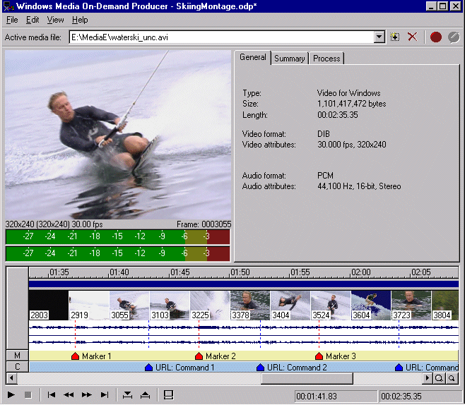
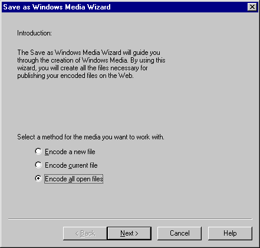
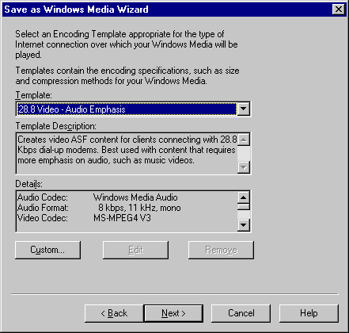
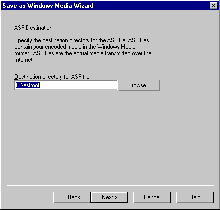
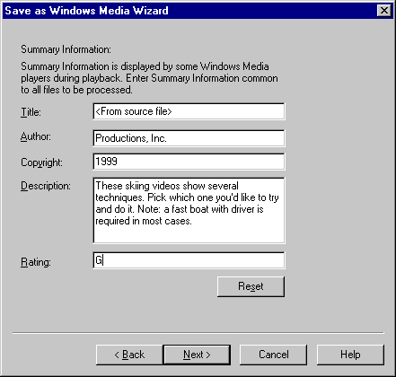
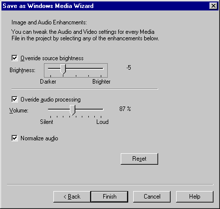
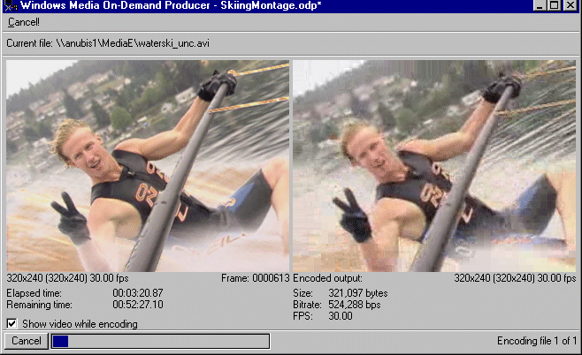
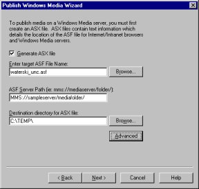
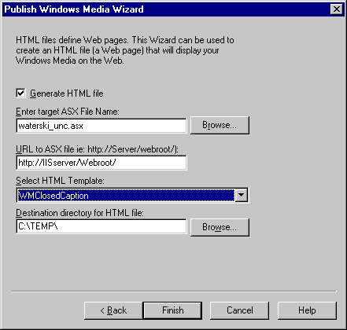

Bill Birney
Microsoft Corporation
May 21, 1999
Contents
Introduction
System Requirements
Tour of On-Demand Producer
Summary
Introduction
Windows Media™ On-Demand Producer is a media production tool that encodes Advanced Streaming Format (.asf) files from audio (.wav) and video (.avi) source files. After ASF content has been created, it can be streamed over the Internet or an intranet using Microsoft® Windows Media™ Services.
On-Demand Producer allows you to convert files, or to capture raw video and create a finished product. The following list shows some of the tasks you can accomplish using On-Demand Producer. Each of the following items is explained in detail later.
- File encoding. Encode .asf files from audio (.wav) and video (.avi) source files.
- Audio and video editing. Determine new starting and ending points, and add fade-ins and fade-outs to smooth the transitions in and out of the media.
- Marker and script command editing. Insert and edit markers and script commands to enhance presentation of your media.
- Audio and video processing. Adjust the overall video brightness and audio volume, and normalize audio.
- Batch processing. Encode more than one file automatically using the same encoder settings.
- Real-time preview. Preview, edit, and process settings in real-time before the final .asf file is encoded.
- Video capture. Capture video from a source that is connected to your video capture card.
- Creation of .asx and .htm files. Use the Publish Windows Media Wizard to create ASF Stream Redirector (.asx) and .htm files.
On-Demand Producer features an intuitive and useful graphical interface to help you adjust edit and process settings. The interface includes an audio waveform display, a video frame thumbnail display, an audio meter, and a timeline for graphically adjusting mark-in and mark-out points, fades, markers, and script commands.

On-Demand Producer has a look and feel that is familiar to professional editors and sound designers. However, the layout is intuitive enough that anyone can feel comfortable using it with minimal training. On-Demand Producer fills the gap between a simple conversion tool and a complex editing program or digital audio workstation. Its professional design and features enable you to be highly productive and to create high-quality finished content. On-Demand Producer is equally useful in the duplication room of a video post-production facility, on a production assistant's desktop, in a school production lab or classroom, in a corporate computer-based training (CBT) authoring environment, and on a workstation used to create ASF content for a personal Web site.
On-Demand Producer is a component of Microsoft® Windows Media™ Tools developed in partnership with Sonic Foundry. Sonic Foundry is well known for its line of high-quality audio workstation and processing programs, including Sound Forge. For more information about Sonic Foundry or Sound Forge, see the Sonic Foundry Web site  .
.
 Back to top
Back to top
System Requirements
- Pentium 100 processor
- Microsoft® Windows® 95, Windows® 98, or Microsoft® Windows NT® version 4.0 or later
- CD-ROM drive
- Sound card
- Video capture card (optional)
- 16 megabytes (MB) of RAM
- VGA display
- 4 MB of hard disk space for program installation
Windows Media Player is required to play back content that is created using On-Demand Producer. Windows Media Player can be downloaded free from the Microsoft Windows Media Technologies page at the Microsoft Web site  .
.
Tour of On-Demand Producer
This tour follows a typical workflow for creating content with On-Demand Producer. The tour includes capturing video using the Video Capture utility, entering final post-production settings in either the simple or full views, encoding files using the Save as Windows Media Wizard, and then creating ASX and template HTML files if necessary using the Publish Windows Media Wizard.
Capturing Video
In most cases, you capture and edit video using an editing program, such as Adobe Premiere. A full-featured editor gives you the advanced functionality to create finished pieces: edit individual frames, add transitions, and even color-correct scene by scene. However, there are cases when it is more expedient to bypass the full-featured editor; for example, when your source video has already been edited and processed, or when you simply do not have time to deal with the extra steps involved in using a full-featured editing program. Raw captures can be cleaned up considerably with On-Demand Producer.
The Video Capture utility of On-Demand Producer allows you to record audio and video -- using your capture cards -- directly to a file on your hard disk. Select Video Capture on the Tools menu to open the utility. When you finish capturing content and quit the utility, the media automatically opens in On-Demand Producer, and you can begin entering the post-production settings.
Back to top
Entering Post-Production Settings
When you open On-Demand Producer for the first time, the simple view appears. This view hides the advanced editing functions that are available in full view. Hiding those functions can be helpful if you are not using them and prefer a less complicated screen. In simple view, you can perform the following tasks:
- Open media files, and create a project. An On-Demand Producer project is a collection of one or more .avi and .wav source files. You typically use a project to hold source files of a certain type. For example, you can create a project to hold all the news clips for a given day or all the voice-over clips for a certain training program. You select one source file at a time from the project list to view and work on. When you save a project, the path to each source file and any settings you have entered for the media are saved, too. If you must make changes to one or more files at another time, just open the project. To create a new project, on the File menu, click New Project. To save a project, click Save Project. To add media to a project, click Open/Add.
- Preview media. You have complete control over playback of source media in the video display, including the ability to scan the video frame-by-frame with the Video Transport Control bar. File information appears above the playback control and on the General tab.
- Enter summary information. On the Summary tab, you can enter title, author, copyright, description, and rating text. This summary information is saved with the project, and is also encoded into the .asf file. When the .asf file is played back in Windows Media Player, the text appears in the display area.
- Enter process settings. On the Process tab, you can adjust overall video brightness and audio volume. When the .asf file is encoded, these settings are used to process the media. You can preview the settings by playing back the source media. On the Process tab, you can also normalize the audio. When you normalize audio, On-Demand Producer adds a processor that automatically changes the audio volume, both maximizing and limiting the level dynamically throughout the media file. By selecting Normalize and properly adjusting the audio volume control, you can keep levels constant from file to file, and prevent the volume from getting too high and causing distortion. To add brightness or audio processing, click on the Process tab, select one or both of the check boxes, then move the slider. To normalize the audio, select the Normalize audio check box.
- Set rough mark-in and mark-out points. If you want the final media to begin later or end earlier than the source media does, you can set new mark-in or mark-out points on the fly as the source plays. Only the area between the mark points will be encoded to the final .asf file. You can play the source file to preview the mark-in and mark-out points you have set. To set a mark-in or mark-out point, click the Mark-in or Mark-out button on the Video Transport Control bar.
When you click the View button in simple view, the screen expands to full view. The simple view area remains in the upper half of the window, and all the advanced editing features open in the lower half. The graphical display in full view includes a time ruler, mark-in and mark-out point bar, audio/visual display, marker and command bars, an audio meter, and magnify buttons. In full view, you can perform the following tasks:
- Set exact mark-in and mark-out points. The current media file is represented in a timeline display, with a time ruler running along the top. Bars displaying other timing attributes and the audio/visual display appear below the time ruler. You can set mark-in and mark-out points exactly by dragging either of the triangular cursors on the mark-in and mark-out point bar. As you drag a mark-in or mark-out cursor, frames change continuously in the video display to help you locate the exact frame on which to set the mark-in or mark-out point. To preview the mark-in and mark-out points, play the source media. Clicking the magnify buttons causes a bigger or smaller chunk of media to be displayed on the editing timeline. You can zoom in, for example, to locate a word or drumbeat in the audio waveform.
- Add fades. To make the in and out transitions appear smooth, you can apply fade-ins and fade-outs to the audio and video. If you apply a fade-in to the video, for example, the video changes from black to full brightness over a period of time, instead of changing abruptly. You can add and adjust the length of fades by dragging cursors on the audio/visual display. In the audio/visual display, audio content in the file is displayed as a waveform, and video content is displayed as a series of animated thumbnail images. By using mark-in and mark-out points and fades, you can eliminate unwanted frames and sound at the beginning and end of source media and, often, create finished pieces from raw captures without having to open the source files in an editing program. To add a fade-in to the audio or video, drag one or both of the red triangular cursors attached to the mark-in point to the right. To add a fade-out to the audio or video, drag one or both of the red triangular cursors attached to the mark-out point to the left. The length of the fade is determined by how far the red cursors are from their respective mark-in or mark-out points.
- Edit markers and script commands. With On-Demand Producer, you can add markers and script commands as the source media is played, by simply pressing the m or c keys on your keyboard. After a marker or command has been inserted on the fly, you can position the element exactly by dragging either of the red cursors along the marker or command bar. Marker and command text is added through dialog boxes.
- Adjust the audio volume. You can adjust the audio volume in simple view or full view using the slider on the Process tab. But in full view you can set the volume correctly, without guessing, by adjusting the slider while reading the audio meter.
- Import and export script files. A script file is a plain text file that contains certain properties for an .asf file. The properties include text properties (such as title, author and copyright), markers and script commands. After setting these properties in On-Demand Producer, you can export them to a script file and open them in another tool, such as Windows Media™ ASF Indexer. You can also import a script file. If you want to apply the same markers and script commands to several files, you can export a script file from a media file that you have set up, and then import the script file into the other media files. To import or export a script file, on the File menu point to Script, and then click Import or Export.
Back to top
Encoding Files
After you enter settings for each of the source files in the project, open the Save as Windows Media Wizard to set up Windows Media™ Encoder and start the process of creating encoded files. The following list takes you through the wizard screen by screen.

- Choose a conversion method. You can encode a single file or all the files in the current project. By selecting Encode all open files, you start an automatic process that handles the encoding of multiple files. Batch processing, as this process is known, encodes each file one at a time, using the settings you have entered. The task of encoding files can be time-consuming, especially if you are encoding on a computer with a slow processor. By using the batch processing feature of On-Demand Producer, you can, for example, encode a group of files during off-hours, or relegate the task to a slow computer.

- Select encoding settings. Windows Media Technologies offers many encoding choices, such as bandwidth, compression type and format, image size and shape, and frame rate. If you want complete control over all the settings, create a custom encoding template. If you do not want to make all the choices, use one of the fifteen templates provided.

- Enter an .asf file destination. Finished files can be saved to a local hard drive, a network share, or directly to your Windows Media server on-demand publishing point.

- Enter summary properties that apply to all files. If you are encoding more than one file, you can enter settings here and on the next screen of the wizard that apply to all files. On this screen, enter summary text: title, author, copyright, description, and rating. Anything you enter here overrides what is entered on the Summary tab in full view or simple view. If you want different title text for each file, but the same copyright text for all files, you can enter titles for each file on the Summary tab in full view or simple view, and copyright text on this screen of the wizard.

- Enter process settings that apply to all files. This page works the same as the Process tab in full view or simple view. The difference is that the settings you enter here are applied to all files being encoded. For example, you can choose to normalize all files with the same audio volume setting so that the audio level is consistent for all files in the project.

- Start encoding. When you click Finish, the encoding process starts, and On-Demand Producer creates an .asf file from either the current source file, or from every file in the project. While a file is being encoded, On-Demand Producer provides you with useful progress feedback. The On-Demand Producer window changes to show elapsed and remaining encoding time, a progress bar, and two video displays: the left video display shows the source image at the current point in the encoding process, and the right display shows the encoded image at that point.
Back to top
Publishing ASF Content
After you encode your ASF content, use the Publish Windows Media Wizard to create an .asx file and HTML template for each .asf file. The following list takes you through the wizard screen by screen.

- Create an .asx file. Enter the name of the .asf file, its final URL, and the destination folder for the .asx file. The Publish Windows Media Wizard can also add ASX scripting to the file that defines an ad banner, and start and end points. An ad banner is an image that appears in the lower portion of the Windows Media Player video display, and is associated with a URL. For example, you can add an ad banner to a commercial that points the user to the advertiser's Web site. Start and end point settings can be added if you want the user to only view a portion of the .asf file. For more information on ASX scripting, see "All About ASX Files."

- Create an HTML file. If the .asf file is to be played back in a Windows Media Player control that has been embedded in a Web page, the Publish Windows Media Wizard can help you to create the page, or at least supply a customizable template for a page. Enter a file name and URL for the .asx file, which is most likely the file created on the previous screen, and the destination path for the .htm file. Also choose one of six HTML templates, based on how the .asf file is to be played back. For example, if the presentation of your .asf file includes closed captioning, choose the WMClosedCaption template.
The other templates can be used to create HTML pages that support a simple embedded Windows Media Player; a simple stand-alone Windows Media Player; a table of contents; a frame into which images can be changed using script commands; and two textboxes that receive text through script commands.
- When you click Finish, the .asx and .htm files are created.
Summary
Windows Media On-Demand Producer is quick to learn and easy to use. It also has a set of features rich enough to be useful in many environments: from a busy professional video post-production facility to a home Web site authoring workstation. On-Demand Producer is a component of Windows Media Tools, which is a set of programs and utilities for creating great ASF streaming content. Other components include Windows Media Encoder, Windows Media™ Author, and Windows Media ASF Indexer. Also included in Windows Media Tools are encoding plug-ins for Microsoft® PowerPoint® and Adobe Premiere, and documentation for Windows Media Tools.